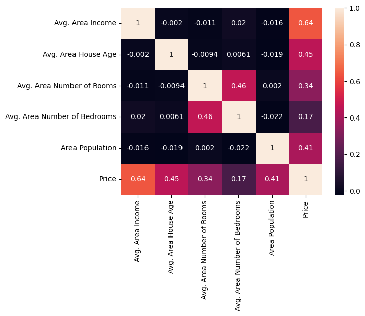
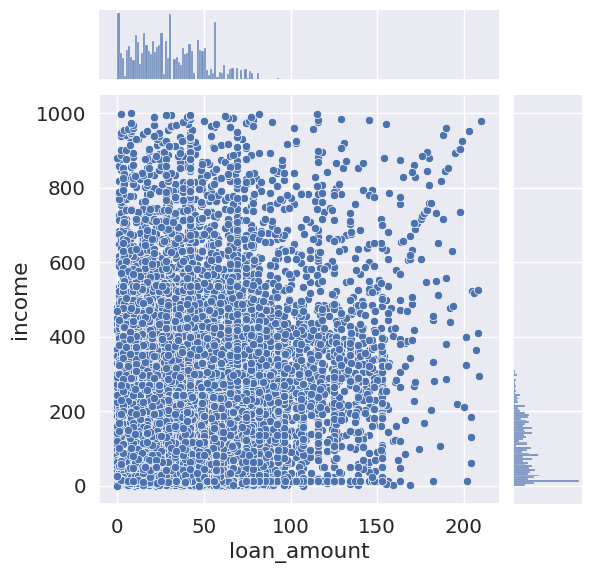
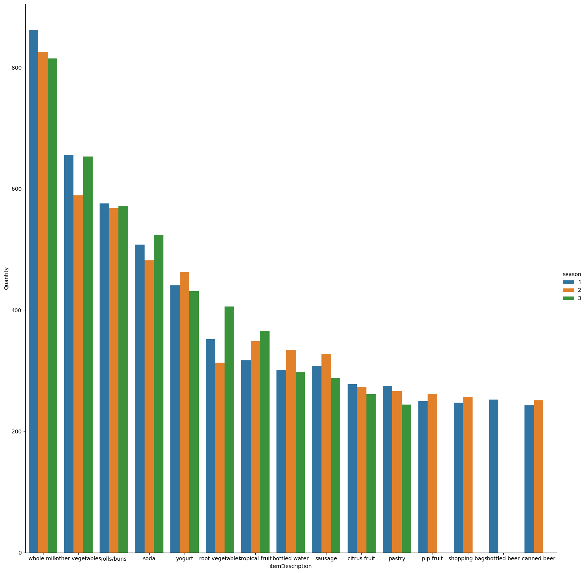
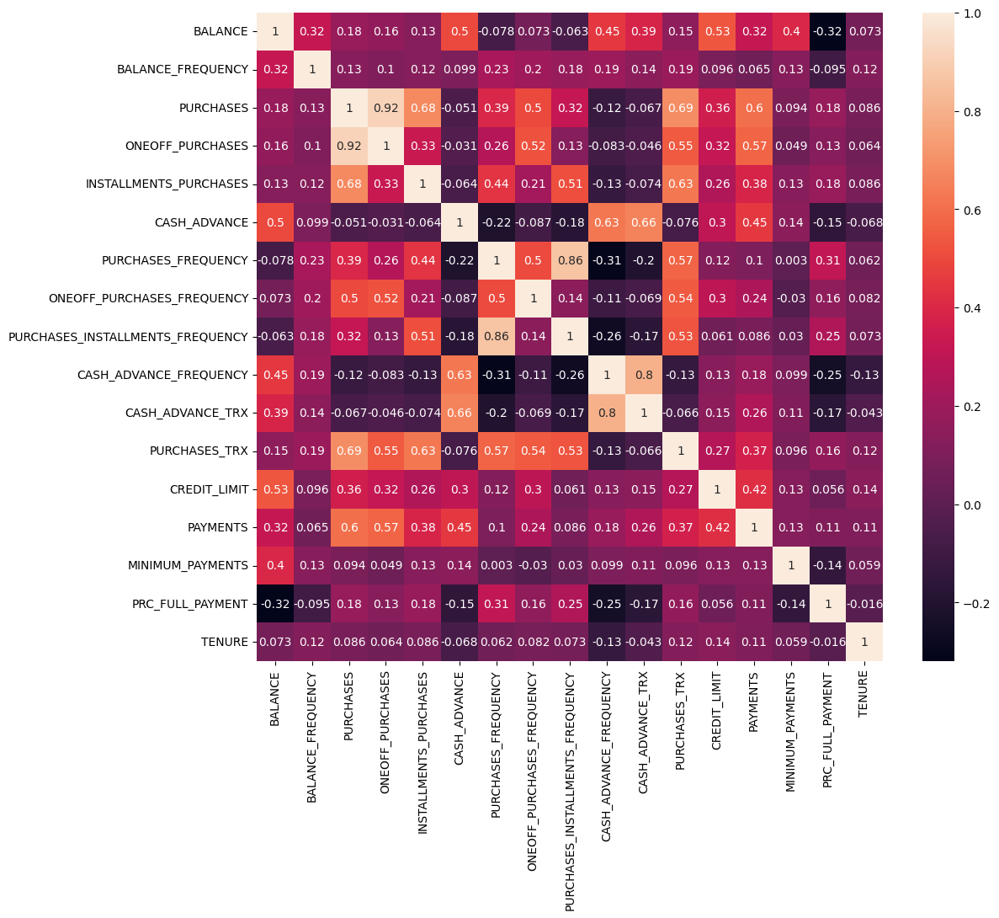
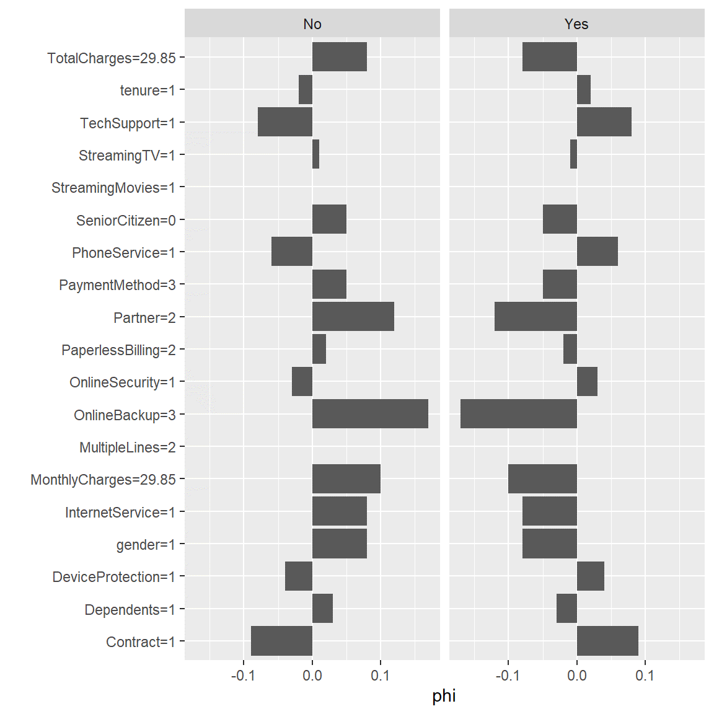
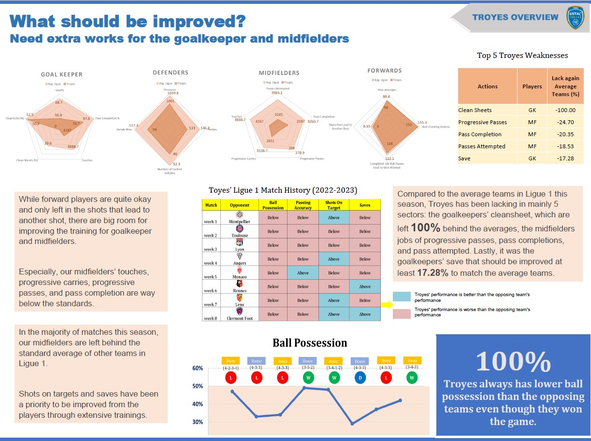
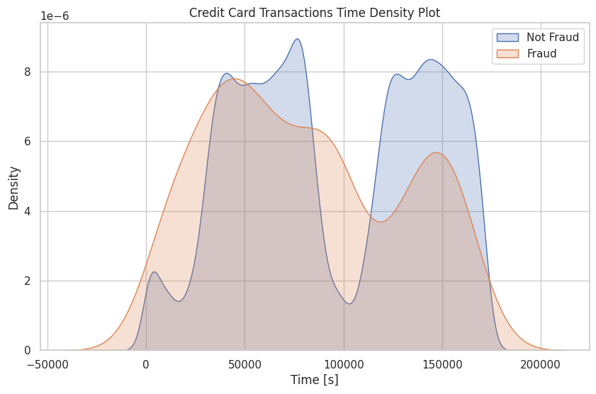
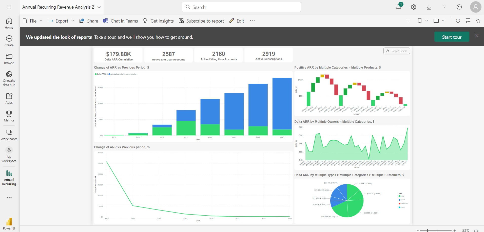
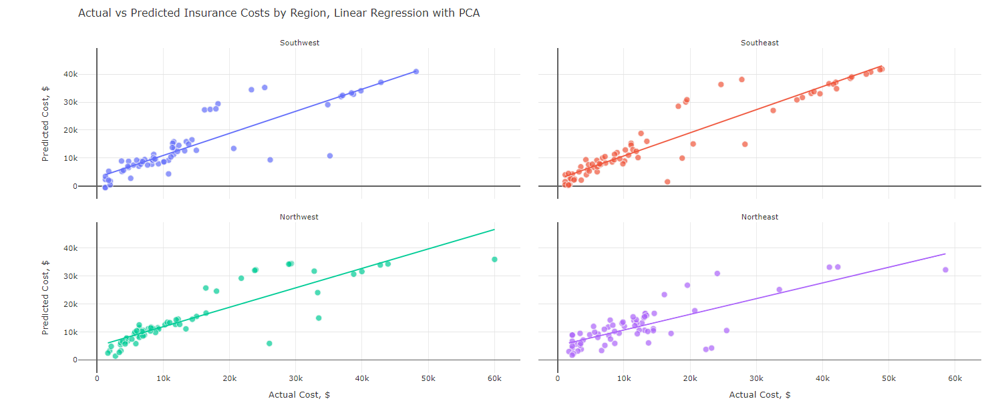

About
Hello, my name is Fathurrahman Yahyasatrio. I am alumni at University of Plymouth, Department of Science and Engineering where I studied for 4 years. Currently, I live in Guildford, Surrey, United Kingdom. Previously, I live in Jakarta, Indonesia and Plymouth, Devon, United Kingdom.
Data Analyst / Insight Analyst / Data Scientist / Statistician / Pricing Analyst / AML Analyst / Portfolio Analyst.
As an experienced professional skilled in business analytics, data analysis, and statistical modeling, I design and develop appropriate extracts and datasets, incorporating data from external sources, to enable analysis, visualization, and interpretation.Able to break down complex problems into manageable parts and to the design, develops data science products to reveal insights and provides an understanding or knowledge of the data that would otherwise not be detected without the application of advanced analytical methods. Developed a comprehensive understanding of the organization's business model, objectives, and challenges through continuous learning and relationship building across all level of the organization.
- City: Guildford, Surrey, United Kingdom
- Degree: Master and Bachelor
- Website: www.fathurrahmanyahyasatrio.github.io
- Email: fathuryahyasatrio21{at}gmail{dot}com
- Job Status: Available Immediately
I did a mathematics foundation programme at University of Plymouth before I obtained Bachelor Degree of Mathematics with Statistics at the same University. Plymouth is my 3rd home for me because this place has been part of my memories as a student. I also obtained Master Degree of Data Science with Business Analytics at the same University.
In my spare time, I love reading personal development books/articles. I have a diverse range of interests spanning fields such as telecommunications, financial services, consumer goods, food and beverage, manufacturing, automotive, retailers, pharmaceuticals, hospitality companies, digital, innovation, corporate strategy, Anti Money Laundering, SDG, ESG, and sports, while also enjoying hobbies like reading, playing golf, watching football matches, tennis, Formula 1 races, and occasionally playing basketball; furthermore, I am an active member and subscriber of Bloomberg and Financial Times, and during summer holidays, I love exploring various beautiful places in the United Kingdom with my family.
Facts
I speak English,French,Spanish,German,and Arabic
French Diplomas (DELF and DALF)
Projects
Education
Here are some of my Education.
MSc Data Science and Business Analytics
2021-2022
University of Plymouth (Plymouth,Devon, United Kingdom)
Awarded Master with Merit (Thesis Title: Investigation of Customer Churn in British Telecommunication using Machine Learning)
BSc (Hons) of Mathematics with Statistics
2018-2021
University of Plymouth (Plymouth,Devon, United Kingdom)
Second Class Honours with Lower Division (2:2)
Foundation Programme - Mathematics
2017-2018
University of Plymouth (Plymouth,Devon, United Kingdom)
Professional Experience
TOYOTA FINANCIAL SERVICES, (UK) PLC
Data Intern Services
Feb 2023- May 2023
Epsom,Surrey, United Kingdom
- Carry out impact assessment with specifications, for project and change request. (2 times a week)
- Create test scenarios, data sets, and outcome records to conduct thorough testing of extraction, reporting, and cube features before they are deployed. (2 times a week)
- Work with BI Developers to develop, support and enhance existing reports/dashboards. (3 times a week)
- Creating “Loan Default Detection” and “Early Warning System” using Python.
Projects
I have been working on these projects below.
House Price Prediction
If we were to inquire about the ideal home of a potential buyer, the real estate agent wouldn't mention specifics like the basement's ceiling height or how close the house is to a railroad. However, the dataset provided in this playground competition demonstrates the various factors that goes beyond the bedroom count or a traditional white fence in impacting the negotiations of home prices.
With 79 different explanatory factors encompasing nearly every facet of residential properties in Ames, Iowa, this assignment gives you the task to forecast the ultimate price of each individual homes.
Project Details Credit Risk Analysis
Engaging in this case study will provide insight into the practical application of exploratory data analysis (EDA) and machine learning in solving real-world business challenges. Throughout this analysis, we will also gain a foundational understanding of risk analytics within the banking and financial services sector, and how data plays a pivotal role in minimizing lending risks and preserving capital.
A company specializing in providing a variety of loans to urban customers. When individuals apply for loans, the company must decide whether to approve the loan based on the applicant's profile. It involves in two types of risks: If the applicant is likely to repay the loan, not approving the loan results in lost business for the company. If the applicant is unlikely to repay the loan, which means they are likely to default, approving loan may result in a financial loss for the company. The provided dataset contains information about past loan applicants and whether they defaulted on their loans. The objective is to identify patterns that indicate whether a person is likely to default or not. The provided information can be used to make decisions such as denying the loan, reducing the loan amount or offering loans to risky applicants at higher interest rates. .
Project Details
Loan Default Classification
Banks heavily rely on lending loans. But it is often associated with risk. The borrower's may default on the loan. To mitigate this issue, the banks have decided to use Machine Learning to overcome this issue. They have collected past data on the loan borrowers and would like you to develop a strong Machine Learning Model to classify if any borrower is likely to default or not.The dataset is enormous and consists of multiple factors like borrower's income, gender, loan purpose etc. The dataset is subject to strong multicollinearity and empty values.
Aim to identify any flaws or issues in the data by carefully examining the dataset, we'll be able to find and address any incosistencies or errors, ensuring that our analysis is based on reliable and accurate data. Once the data is cleaned and validated, the next step is data analysis. This involves exploring the dataset , looking for patterns, trends, and relationship that can provide valuable insights. By understanding the data better, we can make informed decisions and uncover important findings. Finally, our objective is to build the best possible prediction model using Decision Tree and Random Forest.
Project Details Market Basket Analysis
Application in retail settings. The application forecasts the related items that are highly probable for us to purchase alongside our chosen product. The Online Retail a transnational data set which contains all the transactions occurring between 01/12/2010 and 09/12/2011 for a UK-based and registered non-store online retail.The company mainly sells unique all-occasion gifts. Many customers of the company are wholesalers. But first, let's see some deep understand of both concepts: - Customer segmentation: Customer segmentation is the problem of uncovering information about a firm's customer base, based on their interactions with the business. In most cases this interaction is in terms of their purchase behavior and patterns. We explore some of the ways in which this can be used. - Market basket analysis: Market basket analysis is a method to gain insights into granular behavior of customers. This is helpful in devising strategies which uncovers deeper understanding of purchase decisions taken by the customers. This is interesting as a lot of times even the customer will be unaware of such biases or trends in their purchasing behavior.
Project Details Credit Card Clustering
The segmentation of credit card customers into groups according to similar behavior and provide data-driven insights of credit card usage amongst the groups. An exploratory analysis will be used to identify patterns in credit card usage.
Project Details Sentiment Analysis
This experiment focuses on conducting sentiment analysis using a convolutional neural network (CNN) applied to financial news. The main goal of this experiment was to categorize news articles as either having a positive or negative sentiment based on their content. To accomplish this, the experiment utilized a dataset composed of various financial news articles.
Project DetailsInvestigation of Customer Churn in British Telecom
This project strives to reduce customer churn for management of British Telecom and control other devastating circumstances in the telecom industry. I use technical, analytical and commercial skills to support both internal and external stakeholders in understanding British Telecom Customers and identifying strength, weakness, opportunities and threat that will deliver a business benefit or improve British Telecom customer experience. It is essential to proactively prevent customer churn and consistently maintain high levels of customer satisfaction. This is crucial because acquiring new customers can be up to five times more expensive than retaining existing ones. Project Details 
Football Insights in France
Assessing one of the oldest team in France, and preparation for their upcoming season campaign in Ligue 1 through exploratory data analysis and identify patterns of the improvements as the whole team.
Project Details Credit Card Fraud Detection
It is important that credit card companies are able to recognize fraudulent credit card transactions so that customers are not charged for items that they did not purchase.. Project Details 
Revenue Analysis using Power BI Interactive Dashboard
Annual Recurring Revenue Analysis is a financial metric used by businesses, especially in the software department, to evaluate the stability and growth of their subscription-based revenue model. It calculates the total revenue that a company expects to generate from its subscriptions over the course of a year, assuming that all customers continue the subscription without any charges.
Project Details Insurance Premium Prediction
Examine the data of a health insurance company with the goal of forecasting future insurance claims and pinpointing the factors contributing to increased healthcare expenses. The dataset contains information on 1,338 policyholders, encompassing 7 attributes that detail their health and demographic characteristics, such as age, gender, BMI, and smoking habits. Our target variable for prediction is the total claim amount, which represents the charges billed to the insurance provider. To enhance the precision of our cost predictions, I will construct separate models for each of the company's policyholder regions: Southwest, Southeast, Northwest, and Northeast.
Project Details Anti Money Laundering
If we were to inquire about the ideal home of a potential buyer, the real estate agent wouldn't mention specifics like the basement's ceiling height or how close the house is to a railroad. However, the dataset provided in this playground competition demonstrates the various factors that goes beyond the bedroom count or a traditional white fence in impacting the negotiations of home prices.
Money laundering is a significant problem involving billions of dollars. Detecting money laundering is challenging because automated algorithms often produce high false positive rates, flagging legitimate transactions as suspicious. Conversely, false negatives, where laundering transactions go undetected, are also a major issue. Criminals make efforts to conceal their illegal activities. Access to actual financial transaction data is highly restricted due to proprietary and privacy concerns. Even when access is possible, accurately labeling each transaction as laundering or legitimate is problematic. The synthetic transaction data provided by IBM addresses these challenges..
Project DetailsSkills
Here are the skills that I listed below in accordance to my job description.